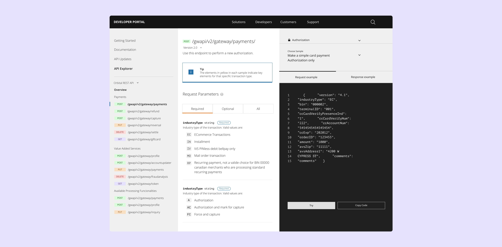

J.P. Morgan Payments
Developer Portal
UX Design

UX Design
Before the Payments Developer Portal, developers had no way to explore J.P. Morgan's payments APIs without first establishing a formal client relationship. My focus was the marketing pages, documentation, and sandbox — three surfaces that needed to feel like one continuous, credible path to a working integration.
I designed the marketing pages to get developers to a working code sample fast rather than making them read capability copy first. Documentation supported multiple languages (Python, JavaScript, Java, Go) plus a Postman collection, and the sandbox flow carried a developer straight from account creation to a working mock API call using the same request shapes used in production.
The portal removed the core structural barrier of the old model: developers could now reach public docs and a working sandbox with no prior banking relationship required.